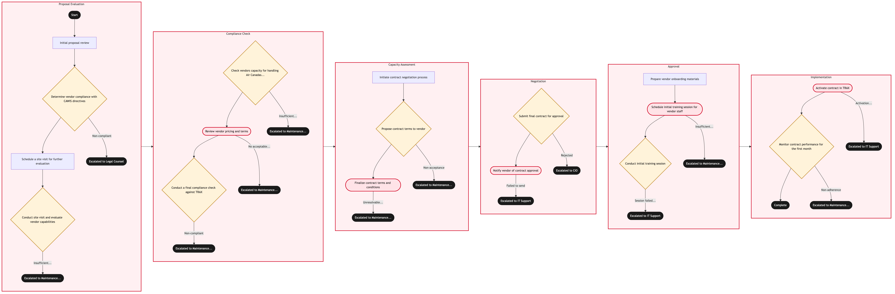

Updated 2026-08-21
Third Party MRO Vendor Management
Process flow
Click to zoom

Process steps
▼
Phase 1 — Proposal Evaluation
4 steps
| Step | Activity | Role | System | Input | Output | KPI | Dec | Exc | Pain point |
|---|---|---|---|---|---|---|---|---|---|
| 1.1 | Initial proposal review | Maintenance & Engineering Manager | TRAXB | Contract proposal document | Review notes | Time to review <= 3 days | N | N | Delays in proposal submission from vendors. |
| 1.2 | Determine vendor compliance with CAWIS directives | CAWIS Compliance Officer | Transport Canada CAWISC | Vendor's technical records and compliance history | Compliance status report | 95% compliance rate | Y | N | Inaccurate or incomplete vendor data in CAWIS. |
| 1.3 | Schedule a site visit for further evaluation | Maintenance & Engineering Manager | TRAXB | Compliance status report | Site visit scheduled | Site visits completed within 2 weeks of proposal | N | N | Logistical challenges in coordinating site visits. |
| 1.4 | Conduct site visit and evaluate vendor capabilities | Maintenance Engineer | TRAX eMobilityB | Site visit checklist | Site visit report | 100% completion of site visit checklist items | Y | N | Difficulties in accessing certain areas or equipment during the visit. |
▼
Phase 2 — Compliance Check
3 steps
| Step | Activity | Role | System | Input | Output | KPI | Dec | Exc | Pain point |
|---|---|---|---|---|---|---|---|---|---|
| 2.1 | Check vendor's capacity for handling Air Canada's maintenance needs | Cargo Compliance Agent | TRAXB | Vendor's historical workload and capacity data | Capacity assessment report | 90% match between vendor capacity and Air Canada's requirements | Y | N | Inconsistent or unavailable capacity data from vendors. |
| 2.2 | Review vendor pricing and terms | APPR Adjudicator | TRAXB | Vendor's proposed contract details | Pricing and term review report | Negotiated price reduction of at least 10% | N | Y | Inflexible pricing terms from vendors. |
| 2.3 | Conduct a final compliance check against TRAX | TRAX Administrator | TRAXB | Vendor's integration capabilities and data exchange protocols | Compliance report with TRAX | 100% successful data exchange tests | Y | N | Technical incompatibilities between TRAX and vendor systems. |
▼
Phase 3 — Capacity Assessment
3 steps
| Step | Activity | Role | System | Input | Output | KPI | Dec | Exc | Pain point |
|---|---|---|---|---|---|---|---|---|---|
| 3.1 | Initiate contract negotiation process | Maintenance & Engineering Negotiator | TRAXB | Vendor's proposal and review reports | Negotiation plan | Negotiations completed within 4 weeks of proposal acceptance | N | N | Delays in response from vendors during negotiations. |
| 3.2 | Propose contract terms to vendor | Maintenance & Engineering Negotiator | TRAXB | Negotiation plan | Contract draft | Vendor acceptance rate of at least 80% | Y | N | Vendors' reluctance to accept negotiated terms. |
| 3.3 | Finalize contract terms and conditions | Maintenance & Engineering Negotiator | TRAXB | Vendor's final offer | Finalized contract | Contract finalized within 2 weeks of vendor acceptance | N | Y | Last-minute changes from vendors causing delays. |
▼
Phase 4 — Negotiation
2 steps
| Step | Activity | Role | System | Input | Output | KPI | Dec | Exc | Pain point |
|---|---|---|---|---|---|---|---|---|---|
| 4.1 | Submit final contract for approval | Maintenance & Engineering Manager | TRAXB | Finalized contract | Approval status | 90% approval rate within 3 weeks of submission | Y | N | Internal bureaucratic delays in the approval process. |
| 4.2 | Notify vendor of contract approval | Maintenance & Engineering Manager | TRAXB | Approval status | Vendor notification email | Notification sent within 1 day of approval | N | Y | Technical issues with TRAX's communication system. |
▼
Phase 5 — Approval
3 steps
| Step | Activity | Role | System | Input | Output | KPI | Dec | Exc | Pain point |
|---|---|---|---|---|---|---|---|---|---|
| 5.1 | Prepare vendor onboarding materials | Maintenance & Engineering Coordinator | TRAXB | Approved contract | Onboarding package | Onboarding package prepared within 2 days of approval | N | N | Resource constraints in preparing comprehensive onboarding materials. |
| 5.2 | Schedule initial training session for vendor staff | Maintenance & Engineering Coordinator | TRAX eMobilityB | Onboarding package | Training schedule | Initial training completed within 1 week of contract approval | N | Y | Vendor's inability to provide required staffing for the training session. |
| 5.3 | Conduct initial training session | Maintenance Engineer | TRAX eMobilityB | Training schedule | Training attendance record | 100% vendor staff attendance at the training session | Y | N | Technical issues with TRAX eMobility during the training. |
▼
Phase 6 — Implementation
2 steps
| Step | Activity | Role | System | Input | Output | KPI | Dec | Exc | Pain point |
|---|---|---|---|---|---|---|---|---|---|
| 6.1 | Activate contract in TRAX | TRAX Administrator | TRAXB | Training attendance record | Contract status updated to 'Active' | Contract activation completed within 2 days of training session | N | Y | Data entry errors in TRAX causing delays. |
| 6.2 | Monitor contract performance for the first month | Maintenance & Engineering Analyst | TRAXB | Contract status and performance data | Performance report | 95% adherence to contract terms in the first 30 days | Y | N | Inconsistent or inaccurate reporting from vendors. |
Swim lanes
Maintenance & Engineering Manager1.1 1.3 4.1 4.2
CAWIS Compliance Officer1.2
Maintenance Engineer1.4 5.3
Cargo Compliance Agent2.1
APPR Adjudicator2.2
TRAX Administrator2.3 6.1
Maintenance & Engineering Negotiator3.1 3.2 3.3
Maintenance & Engineering Coordinator5.1 5.2
Maintenance & Engineering Analyst6.2
Systems touched
TRAXBTransport Canada CAWISCTRAX eMobilityB
Key performance indicators
- Time to review <= 3 days
- 95% compliance rate with CAWIS directives
- Site visits completed within 2 weeks of proposal
- 100% successful data exchange tests with TRAX
- Negotiated price reduction of at least 10%
- Vendor acceptance rate of at least 80%
- 90% approval rate within 3 weeks of submission
- Notification sent within 1 day of approval
Risks and control points
- Delays in proposal submission from vendors
- Inaccurate or incomplete vendor data in CAWIS
- Logistical challenges in coordinating site visits
- Difficulties in accessing certain areas or equipment during the visit
- Inconsistent or unavailable capacity data from vendors
- Inflexible pricing terms from vendors
- Technical incompatibilities between TRAX and vendor systems
- Delays in response from vendors during negotiations
Air Canada Process Wiki — process and systems reference compiled from public sources
for IT Application Management and User Support pre-sales discovery.
Built 2026-08-21. Every system carries an evidence tier: tier C is an industry pattern and tier U is an open
question, and neither should be asserted as fact about Air Canada without confirmation in discovery.
Not affiliated with or endorsed by Air Canada. Air Canada, Aeroplan and Altitude are trademarks of Air Canada.